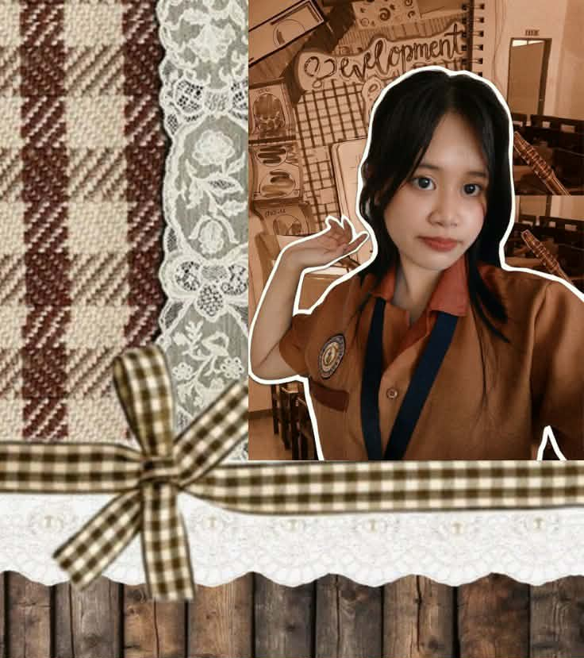

Sooner or later, I see myself standing in front of a classroom—not just teaching lessons, but shaping lives. I will be an educator who listens, understands, and inspires. I won’t just focus on textbooks, but also on the values and confidence my students need in real life. I want to be the kind of teacher students feel comfortable with—someone they can approach, trust, and learn from. I will create a space where mistakes are part of learning, and every student feels seen and valued. In the future, I will look back and see not just lessons taught, but lives I helped change.